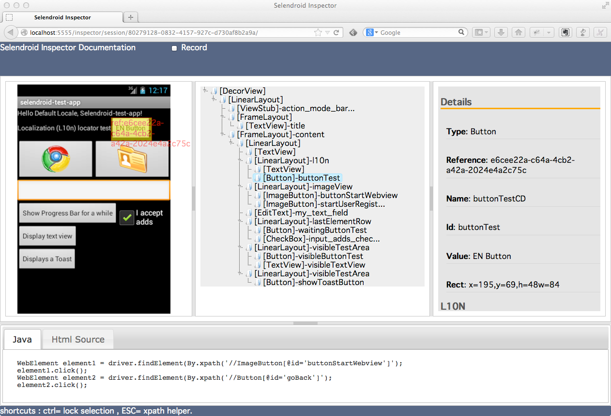

driver.switch_to.window('NATIVE_APP')driver.switchTo().window("NATIVE_APP");When a selendroid test session is started, by default the native mode is activated.
Sample app view hierarchy in the inspector:
Means the id that is described in the layout xml file of the corresponding activity.
driver.find_element(:id,'buttonTest')driver.findElement(By.id("buttonTest"));Is mapped to the accessibility label (content description) of the view element.
driver.find_element(:name,'buttonTestCD')driver.findElement(By.name("buttonTestCD"));Mapped to the displayed text of the element.
driver.find_element(:link_text,'EN Button')driver.findElement(By.linkText("EN Button"));Mapped to the displayed text of the element.
driver.find_element(:partial_link_text,'EN Butto')driver.findElement(By.partialLinkText("EN Butto"));Mapped to the ui element class of the view.
driver.find_element(:class_name,'android.widget.Button')driver.findElement(By.className("android.widget.Button"));Mapped to the simple name of the ui element class of the view.
driver.find_element(:tag_name,'Button')driver.findElement(By.tagName("Button"));XPath is the language used for locating nodes in an XML document. XPath extends beyond (as well as supporting) the simple methods of locating by id or name attributes, and opens up all sorts of new possibilities such as locating the third Button on the activity.
driver.find_element(:xpath,"//Button[@id='buttonTest']")driver.findElement(By.xpath("//Button[@id='buttonTest']"));Selendroid offers you to interact with the app using some special keys e.g. like the Android menu button.
driver.keyboard.send_keys("\uE102")/* When using SelendroidDriver */
driver.getKeyboard().sendKeys(SelendroidKeys.MENU);from selenium.webdriver.common.action_chains import ActionChains;
""" Instantiate the driver like: driver = driver=webdriver.Remote( ... ); """
chain = ActionChains(driver);
""" Send search key"""
chain.send_keys(u'\ue103').perform();The original list is documented in the interface: SelendroidKeys